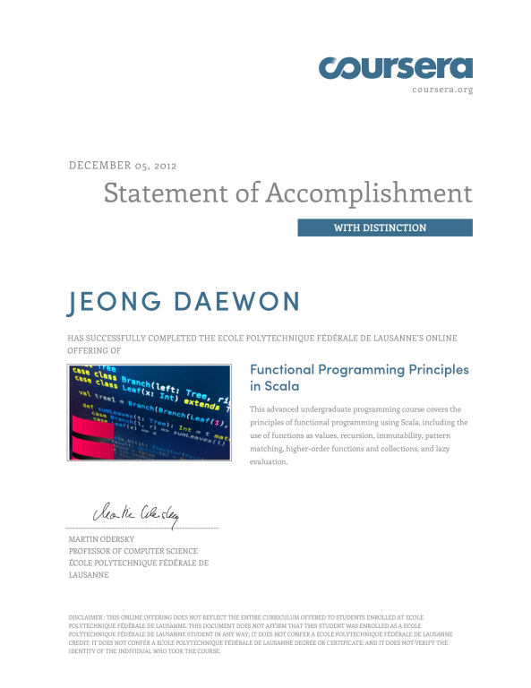

Scala에 창시자인 Martin Odersky가 직접 강의를 한다.
평소에 FP에 관심이 많았던 지라 좋은 기회라고 생각하고 꽤나 많은 시간을 들여서 강의를 들었다.
덕분에 처음으로 외부 스터디 그룹에도 참여하게 되면서 좋은 인연도 생겼고, Scala도 어느정도 자연스럽게 쓸 수 있게 됬다.
La Scala 코딩단 에서 다른 분들과 함께 진행했기 때문에 무려 7주나 되는 기간을 무사히 진행 할 수 있었던 것 같다.
Clojure 스터디를 멈춘것은 조금 아쉽지만, 아래 수료증을 보면 뿌듯함이 느껴진다 :)
